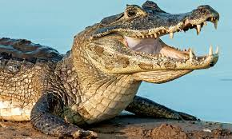
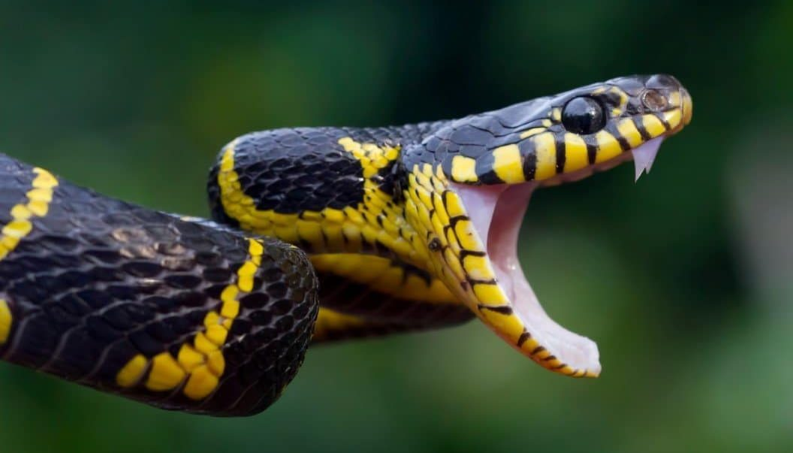
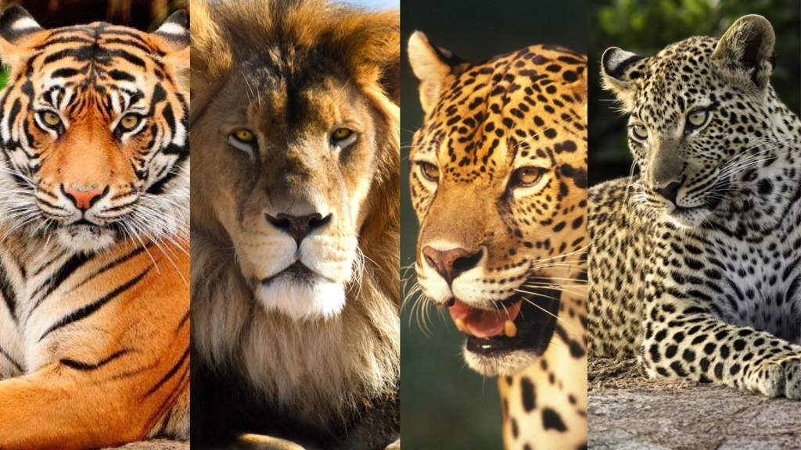
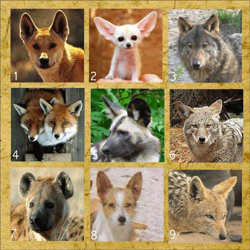

IGUANA
| ESPECIES | LOCAL | DIETA |
|---|---|---|
|
 JACARE |
AMERICAS/ASIA | CARNIVORO |
Os jacarés se diferenciam dos crocodilos por possuírem uma cabeça mais curta e mais larga, com focinhos mais avantajados.
Onde Jacarés ingerem carne e peixe. O menor jacaré é o jacaré-anão, cujo comprimento varia entre 1,2 e 1,4 metros e pesa
de 6 a 7 quilogramas. O aligátor-americano tem um tamanho médio de 3 a 4,6 metros, chegando até 5,3 metros e 400 quilogramas.
O tamanho médio do jacaré-açu é de 2,8 a 4,2 metros, podendo alcançar os 6 metros e mais de 400 quilogramas.
| ESPECIES | LOCAL | DIETA |
|---|---|---|
|
 COBRA |
TODOS OS CONTINENTES (EXETO OS POLOS) | CARNIVORA/HERBIVORIA |
Serpentes são animais vertebrados que pertencem ao grupo dos répteis. Seu corpo é coberto de escamas, o que Ihes confere um
aspecto às vezes brilhante, às vezes opaco, ou ainda uma aspereza quando tocadas. As serpentes como outros répteis não
conseguem controlar a temperatura de seu corpo, por isso são chamados de animais ectotérmicos ou, mais popularmente, animais de
sangue frio. Isso implica que ao tato elas pareçam frias, pois sua temperatura é muito próxima à do ambiente em que elas se
encontram.
As serpentes podem ser classificadas em dois grupos básicos: as peçonhentas, isto é, aquelas que conseguem inocular seu veneno
no corpo de uma presa ou vítima, e as não peçonhentas. No Brasil ambos os tipos podem ser encontrados nos mais diferentes
habitat, inclusive em ambientes urbanos.
| ESPECIES | LOCAL | DIETA |
|---|---|---|
|
IGUANA |
AMERICAS | HERBIVORIA |
Iguana é um gênero de réptil da família Iguanidae. As espécies deste gênero ocorrem em regiões tropicais da América Central,
América do Sul e Caribe.As iguanas têm hábitos arborícolas, isto é, vivem em árvores, podendo atingir até 180 cm de comprimento.
Quando jovens, os iguanas possuem uma coloração verde intensa, já quando maiores, apresentam, ao longo do corpo, listras escuras.
A cauda de uma iguana possui dois terços do comprimento total do corpo. Iguanas podem ser criados em terrário tropical úmido, por habitar florestas tropicais.
| OUTROS ESTUDOS |
 FELINOS |
 CANINOS |
|
|---|---|---|---|